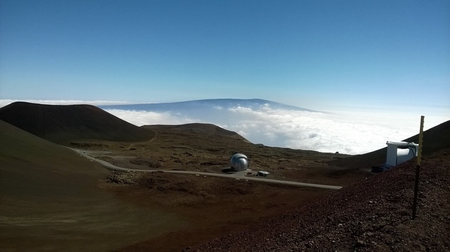

Download my CV
Educational background
| Year |
Position/degree |
Institute, City |
| 2015 - Present |
PhD candidate (Astronomy) |
Australian National University, Canberra |
| 2010-2015 |
Integrated BS-MS (Physics) |
Indian Institute of Technology, Kharagpur |
| 2010 |
ISC (School board) |
Vivekananda Mission School, Kolkata |
Awards and Grants
- RSAA student travel grant $4000, 2019
- Astronomical Society of Australia (ASA) student travel award $1000, 2019
- ANU Vice Chancellor's travel grant $1500, 2019
- Olin J Eggen Research Award 2017,RSAA, ANU
- ANU PhD Scholarship (International) and RSAA Research Supplementary Scholarship 2015
- MITACS Globalink Research Internship award 2014.
- Visiting Students Research Fellowship 2013, Indian Institute of Technology(IIT) Gandhinagar.
- Visting Students Research Fellowship 2012, Indian Academy of Sciences (IAS).
- Kishore Vaigyanik Protsahan Yojana (KVPY) Fellowship 2009, Government of India.

Observing experience
Current projectss
Please see the projects page.
Publications
Please see the publications page.
Extra-academic involvement
- Member of the Local Organising Committee of the Harley Wood School of Astronomy 2017.
- Member of the organising committee for the Mount Stromlo Student Seminars 2016.
- Served as PhD student representative on Education Committee, Research School or Astronomy &
Astrophysics from June 2016 - February 2017.
- Active member of astronomy outreach team at Mount Stromlo Observatory.
- Member of the local organising committee of the recent DAE-BRNS Theme meeting on Ultrafast Science UFS 2013
at IIT Kharagpur.
Pre-PhD research experience
- M.Sc. Thesis Project titled “Simulating HII bubbles around quasars” under the guidance of
Prof. Somnath Bharadwaj . My Masters project involved simulations of the emitted radiation bubble from Quasars, to have a better understanding of
the reionization epoch. I was mainly involved in improving and testing of the C- based code of
the simulation.
- Summer project called ‘Colorizing the dance of galaxies’ under the supervision of
Dr. Jayanne English , Dept of Physics and Astronomy, University of Manitoba, Canada.
The project required me to work mainly on simulating artificial galaxies and modeling them using
a genetic algorithm called Ferret, which is based on MATLAB. The project primarily consisted of
coding in MATLAB. Also, visualization techniques were later applied on these generates galaxy
models using softwares like GIMP and Processing. The project was funded through the MITACS
Globalink Research Internship program.
- I have worked on Z Scan based non linear optical characterization of nanomaterials under
Prof. P. K. Datta, Dept. Of Physics and Meteorology, IIT Kharagpur and I, along with a colleague,
presented a poster on the same in the Theme Meeting on Ultrafast Science UFS 2013 held at
IIT Kharagpur which won the second prize.
- Summer project on ‘Black Hole Kinematics’ under the guidance of Dr. Sudipta Sarkar,
Dept Of Physics, IIT Gandhinagar during May-July 2013, which dealt with simulating evolution of
the event horizon under different cases of small perturbations in the mass of a Schwarzschild
Black Hole. I mainly used Mathematica for this work.
- Summer project on ‘Small Angle Neutron Scattering Studies of Biological Systems in Solution’
under Dr. Vinod K. Aswal, Solid State Physics Division, Bhabha Atomic Research Centre(BARC),
Mumbai during May-July 2012.